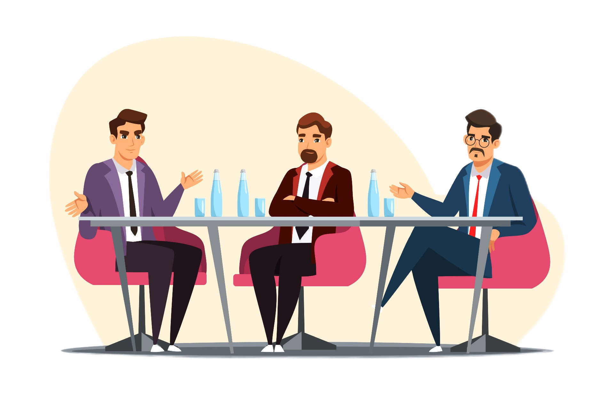
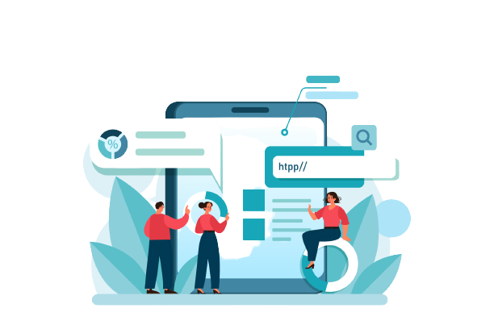
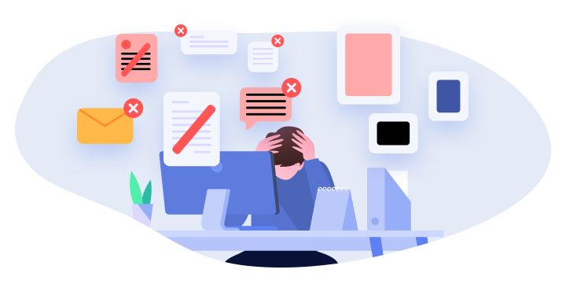
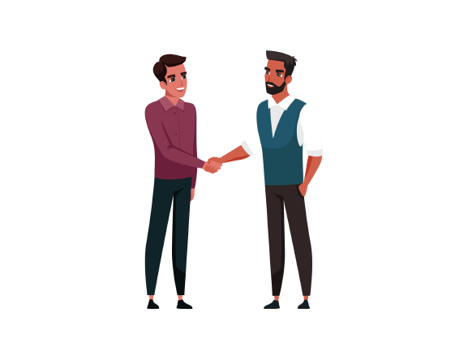
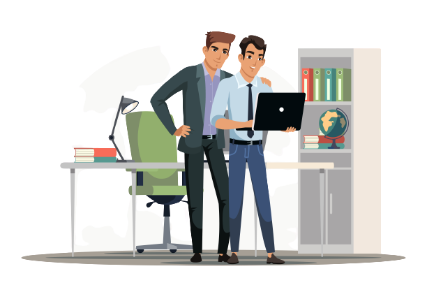

Our Story

Work Summary
Since the project required us to do mockups design in addition to the coding of the website, so we
went in enjoyable journey with a lot of things to learn and a lot of things to improve on. Firstly
we spent some time brainstorming and deciding on the website topic, we wanted to have a topic that
is useful for us and at the same time related to our major, so we decided to choose “Future of
technology” .Secondly, our design and structure, before starting it we had a discussion with our
tutor about modern designs and what they consist of. Then we choose our main colors to use, however
it took some more time to agree on the shadows and codes of the colors. And to finalize the design,
we got feedback and opinions from our tutor and friends. Finally, coding the website. when we
finished the design and colors we started with coding, and it was relatively easily and fun. As a
group we chose the channels of communication (discord and WhatsApp). We had several meetings to see
others work and to divide tasks, so some of our work was individual and some was group work.


Challenges
Although it was enjoyable journey we faced some challenges, as it is a normal thing to happen in any
kind of a project:
- Finding a suitable time for everyone in the group to meet, especially at the first. Then we
found the “golden time” and sticked to it through the rest of the work.
- Things we didn’t know how to implement: we had ideas for our website, but our technical
knowledge was not sufficient to implement, so we had to search online and figure it out.
- Agreeing on design ideas, layout of the website, and images: it is not really a “challenge” but
because everyone have a different perspective, we spent some time to agree on one design.
Group Work Experience
This project was a good learning experience. It has helped us alot on how to work
in a group environment. We learnt that there are rules that you have to follow in order to assure
the group's success, for example:
- Each member has to be paying attention to what his colleagues are saying.
- Each member has to be Giving direct feedback to his colleagues because it's very effective for
finishing tasks
- Everyone experiences a problem every now and then, and when you use some best practices in
creative and collaborative problem solving, you’ll often come to solutions quicker and more
efficiently than ever before.


Technical Work Experience
For us the project was a good chance to further enhance and enrich our knowledge in the field of
making websites, as it did give us the chance to create a full website from scratch. As it is normal
thing to happen when coding
, we encountered issues, bugs, problem in alignments etc. It was sometimes frustration yes, but it
was a good way to learn things. Additionally, we initially thought that website making should not
take much time, however, we were proven wrong,
because we noticed that changes that we want to make will not finish, and we want additions
every time.
Developer's report
Promotion and Usage of website
By using simple and appealing design and colors for our website, and by following and complying to accessibility standards,
our website will be more user-friendly which will definitely will encourage our users to re-use our website. Moreover, to make it even
more user-friendly, we have made our registration process fairly simple and straight-forward, and without complications and collecting unnecessary information
about the user. Finally, we tried to be innovative in our content while ensuring that it is simple and can be understood by anyone using the website.
Website maintainability
As websites content, structure and code needs updating, upgrading, and changing from time to time. It is
very crucial
to have these things in mind from the very early stages of the website development, so we tried as much
as we could to follow these rules to enhance our website's maintainability:
- DRY (Don't Repeat Yourself): Especially for styling elements, as websites have some common items
with slight modifications and other identical items,
so using base classes and then creating ones with modifications, is an efficient solution, which
will uses less code, and it will be easier to navigate
through the code and to know which part is for which part.
- Following a naming convention and a coding standard: In group projects it is very important that
every one follows the same naming style for variables, classes, and Ids names
so that everyone in the project know's what is going on and doesn't get confuse. And most
importantly that the names are self-explanatory and human readable name.
- Remove unused code: So that it easier to navigate through code with much less code base. Moreover,
so we don't get confused and mix used code with unused one.
- Documentation and comments: This is essential thing to do for future upgrade. Because with time,
especially if we did not modify the code, we might forget what we was doing,
or what our thinking process was, so comments and documentation will act as a notes for us.
Additionally, if someone new joins the project, he will easily get to know the project by looking
at the comments and documentation. However, it is very important that we do not over comment thing
because then the code will be a mess and it will be hard to navigate through.
Website accessibility standards
As website maintainability was for us, programmers, website accessibility standards is all about the
user. Some users might have accessibility issues whether it is permanent
or temporary. Therefore to make sure that the website is user-friendly and everyone can use it easily,
there are set of policies that we tried to followed as much as we can:
- Understandable content: easy to understand content using simple English without unnecessary
complications.
- functional content: buttons, links can be clicked in some way. Other ways can be added in the future
like keyboard, voice etc.
- Adaptive website: make it for every screen. Can be enhanced more in the future.
- Perceivable: means that all users can receives the content in one way. for example by using the alt
attribute for images, and by using clear contrast for the colors with big font sizes.
Finally, to ensure everything is aligned with standards, we used the The W3C Markup Validation service to check that we are following the code accessibility
standards.